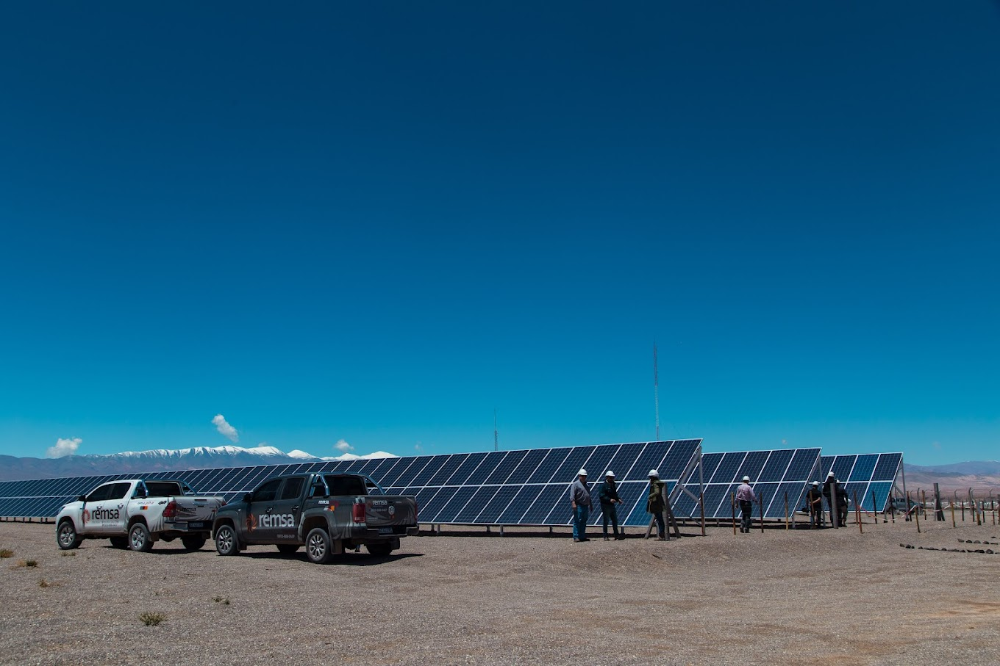
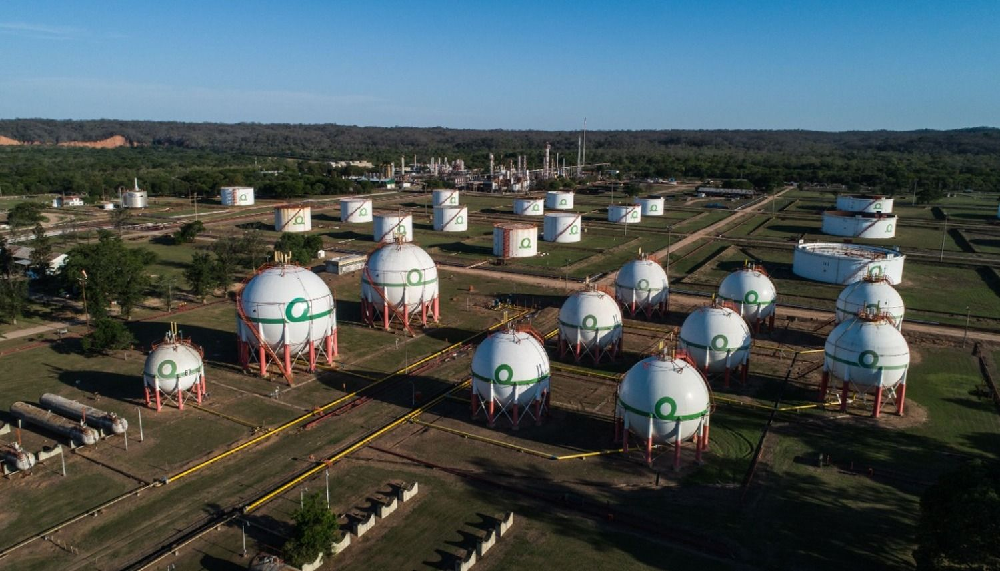

.jpg)
Landon Palmer
Que Hago
- Estudios del impacto ambiental ocasionados por las actividades humanas y por los fenómenos naturales
- Planificación, diseño, programación, dirección, implementación, administración, asesoramiento, optimización y evaluación del aprovechamiento y desarrollo sustentable de los recursos naturales, los sistemas de producción y el medio ambiente.
- Elaboración, interpretación e implementación de políticas y normas legales que regulan el uso, preservación, conservación y aprovechamiento de los recursos naturales y del medio ambiente.
- Estudios, manejo y control de cuencas hidrográficas para la optimización de la gestión ambiental.
- Planificación y Gestión de residuos
- Asesoramiento y consultoría en Certificación de calidad de productos de origen vegetal y animal, y de sus procesos de producción.
- Planificación, implementación, dirección y evaluación de la restauración y la rehabilitación de ecosistemas degradados.
- Tasaciones, arbitrajes y peritajes que impliquen determinaciones acerca del uso y de los daños que pudieran ocasionarse a los recursos naturales y el medio ambiente.
Experiencia
1 / 4

2 / 4

3 / 4

4 / 4